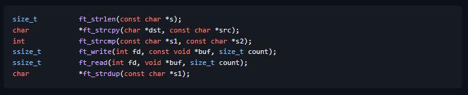
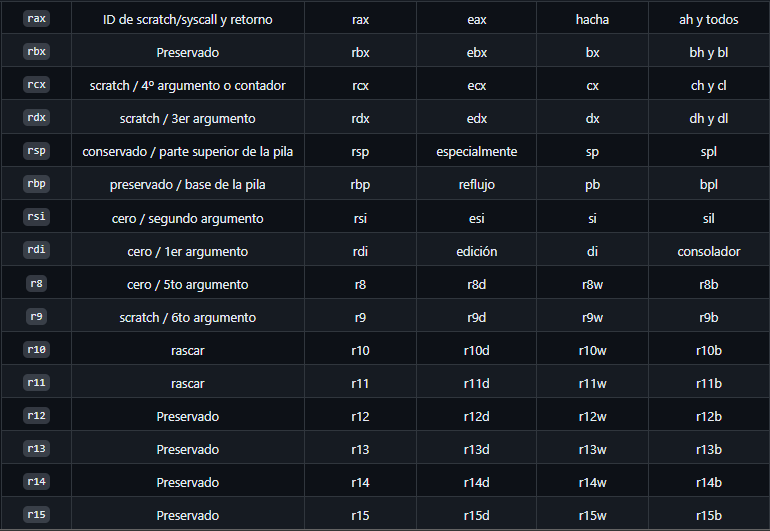

Ensamblador - LibASM

El código escrito en lenguaje ensamblador posee una cierta dificultad de ser entendido ya que su estructura se acerca al lenguaje máquina, es decir, es un lenguaje de bajo nivel.
Este proyecto consiste en codificar funciones básicas (ver más abajo) en Linux x86-64 Assembly (sintaxis de Intel) y que luego se compilan en una biblioteca para su uso en código de lenguaje C.

Los programas hechos en lenguaje ensamblador pueden ser más rápidos y consumir menos recursos del sistema que el programa equivalente compilado desde un lenguaje de alto nivel. Al programar cuidadosamente en lenguaje ensamblador se pueden crear programas que se ejecutan más rápidamente y ocupan menos espacio que con lenguajes de alto nivel.
Debe compilar su código ensamblador con nasm. NASM está basado en líneas. La mayoría de los programas constan de directivas seguidas de una o más secciones . Las líneas pueden tener una etiqueta opcional . La mayoría de las líneas tienen una instrucción seguida de cero o más operandos
Registros

Los registros son una parte del procesador que contiene temporalmente la memoria. En la arquitectura x86_64, los registros contienen 64 bits. Las versiones de 64 bits de los registros x86 'originales' se nombran:
- rax- registrar una extensión; almacena ID de llamada al sistema y valores de retorno.
- rbx- registro b ampliado.
- rcx- registro c ampliado; algunas instrucciones lo usan como contador.
- rdx- registro d ampliado.
- rbp- puntero base de registro; inicio de la pila (base de la pila).
- rsp- puntero de pila de registro; ubicación actual en la pila (la parte superior de la pila), creciendo hacia abajo.
- rsi- índice de fuente de registro; fuente de copias de datos; usado para pasar el argumento de función #2.
- rdi- registrar el índice de destino; destino de las copias de datos; se usa para pasar el argumento de función #1.
- Los registros agregados para el modo de 64 bits se nombran en secuencia numerada: r8, r9, r10, r11, r12, r13, r14,r15
Instrucciones
La mayoría de las instrucciones básicas tienen la siguiente forma:
- add REG, REG
- add REG, MEM
- add REG, IMM
- add MEM, REG
- add MEM, IMM
Las instrucciones con dos operandos de memoria son extremadamente raras.
Instrucciones más usadas
- mov DEST, SRC - mover datos entre registros, mover datos entre registros y memoria.
- mov DEST, VAL - cargar datos inmediatos en registros.
- movsx DEST, SRC - escribe en todo el registro.
- push SRC - insertar en la pila; útil para pasar argumentos, guardar registros, etc.
- pop DEST - eliminar el valor superior de la pila en el registro dado. equivalente a mov DEST, [rsp]; add 8, rsp.
- inc REG - incrementa el valor en el registro ( i++).
- dec REG - disminuir el valor en el registro ( i--).
- add DEST, SRC - suma: DEST = DEST + SRC
- sub DEST, SRC - resta: DEST = DEST - SRC
- mul SRC - multiplicación (enteros sin signo): rax= rax* src . Altos 64 bits de producto (generalmente cero) entran en rdx.
- div SRC - división: rax = rax / src (proporción en rax, y el resto en rdx). Extrañamente, en la entrada rdx debe ser cero, o obtienes un SIGFPE.
- and DEST, SRC - Operador AND bit a bit: DEST = DEST & SRC
- xor DEST, SRC - Operador XOR bit a bit: DEST = DEST ^ SRC
- xor REG, REG - utilizado para inicializar el registro con 0. Igual que mov REG, 0(pero más rápido).
- cmp A, B- comparar dos valores, estableciendo banderas que son utilizadas por los saltos condicionales (abajo)
- j* LABEL - ir a la etiqueta según el resultado de la comparación anterior. Condicionales disponibles: je(==), jne(!=), jl(<), jle(<=), jge(>=), jg(>), jz(= 0), jnz(!= 0), y muchos otros. También disponible en comparaciones sin signo: jb(<), jbe(<=), ja(>), jae(>=).
- jmp LABEL - Ir a la etiqueta de instrucciones . Salta cualquier otra cosa en el camino.
- ret - devolver. Haga estallar el contador del programa de retorno y salte allí. Finaliza una subrutina.
- mov #99, %r10 - cargar el valor constante 99 en r10
- mov %r10, %r11 - mover datos de r10 a r11
- mov %r10, (%r11) - mover datos de r10 a la dirección a la que apunta r11
- mov (%r10), %r11 - mover datos de la dirección a la que apunta r10 a r10
- call label - llamar a una subrutina / función / procedimiento
- syscall - invocar una llamada al sistema
A, quo quibusdam iusto repellendus blanditiis. Repellendus, doloribus, veritatis blanditiis dolores cumque in pariatur magni velit quibusdam doloremque amet harum dicta neque voluptas possimus dignissimos corporis voluptatibus nemo nostrum quae fuga enim beatae voluptate ex maxime sequi iusto. Voluptate, neque, quisquam, ipsum reprehenderit pariatur magnam excepturi libero quis nam inventore recusandae molestiae temporibus explicabo vel eius facere sit quae deleniti laboriosam voluptatibus necessitatibus sequi distinctio!